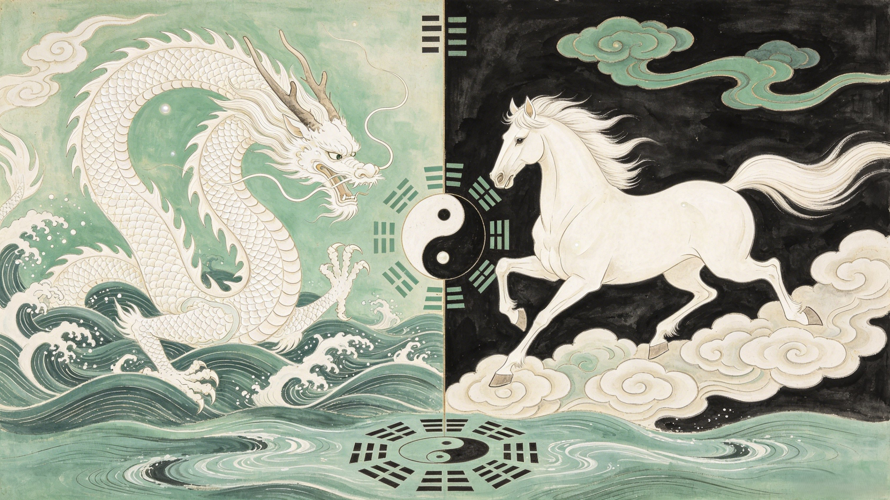

The Meaning
What does the White Dragon Horse symbolize? Across Chinese tradition, Buddhist philosophy, and world mythology, the white horse who was secretly a dragon carries meanings that reach far beyond Journey to the West — into the deepest questions of identity, service, and what it means to be transformed.
In Chinese culture, the white horse (白马, báimǎ) carries rich symbolic weight that predates Journey to the West by centuries. White is the color of purity, mourning, and the west — the direction of death and the afterlife, but also the direction of spiritual pilgrimage. That the White Dragon Horse is white is no coincidence: he is a creature of the west, carrying a monk toward the western paradise where the Buddha resides.
The horse (马, mǎ) is one of the twelve animals of the Chinese zodiac, associated with speed, endurance, and loyalty. A horse that carries its rider faithfully through danger is a recurring motif in Chinese literature and art. But Ao Lie elevates this motif to a cosmic level: he is not merely a horse, but a dragon who chose to be a horse. His whiteness is not just a color but a statement — of purity of intent, of spiritual purpose, of having been washed clean of his past crime.
The concept of the dragon-horse (龙马, lóng mǎ) appears in Chinese mythology long before Journey to the West. The most famous dragon-horse emerged from the Yellow River during the reign of the sage-king Fuxi, bearing on its back the mysterious markings that became the eight trigrams (八卦) of the I Ching — the foundation of Chinese philosophy and divination. This original Longma was a creature of revelation, bringing cosmic knowledge from the waters to humanity.
Ao Lie is a different kind of dragon-horse. He brings no trigrams, no cosmic diagrams. Instead, he brings his body. His gift is not knowledge but service. The first Longma revealed the structure of the universe. The second Longma — Ao Lie — demonstrated how to live within it: with humility, endurance, and silent devotion. Together, these two dragon-horses represent the twin pillars of Chinese thought: understanding the cosmos (knowledge) and living correctly within it (virtue).
In the Buddhist framework of Journey to the West, every pilgrim represents an aspect of the spiritual journey. Tang Sanzang is the seeking mind — pure in intent but helpless without support. Sun Wukong is the restless will — powerful but needing discipline. Zhu Bajie is the untamed appetite. Sha Wujing is the calm, centered heart.
And the White Dragon Horse? He is the body itself — the physical vehicle through which enlightenment is pursued. He represents the truth that spiritual attainment is not purely mental; it requires the body's participation. You cannot think your way to enlightenment. You must walk there. Step by step. Li by li. The White Dragon Horse, who walked every step of the journey, embodies this essential Buddhist truth.
The White Dragon Horse stands within a global tradition of extraordinary equines, but his story is unique in its emphasis on service over freedom, silence over expression, transformation through humility over transformation through power.
Of all these mythical horses, Kanthaka may be the closest parallel to the White Dragon Horse: a steed who participates in a spiritual journey, who understands the mission, and who serves without complaint. But Kanthaka carried the Buddha-to-be only for a single night's ride from the palace. Ao Lie carried his master for fourteen years. His sacrifice was measured not in hours but in decades. Not in a single act of service but in a lifetime of it.
Psychologically, the White Dragon Horse represents the part of us that does the work without recognition. In any collaborative endeavor — a company, a family, a movement — there are the visible actors (the Wukongs) and the invisible supporters (the Ao Lies). The ones who carry the weight. The ones who never give speeches. The ones who, if they disappeared, would cause everything to collapse — but whom no one notices until they are gone.
Ao Lie's silence is not passivity. It is the discipline of knowing your role and fulfilling it completely. In a world that rewards self-promotion, his story is a radical reminder: the most valuable person in the room may be the one who says nothing at all. The dragon prince who chose to be a horse knew something that the Monkey King — for all his brilliance — took much longer to learn: greatness is not about being seen. It is about being essential.
In an age of personal branding and social media visibility, Ao Lie's story is countercultural. He reminds us that not every contribution needs to be visible to be valuable. That silence can be a form of strength. That service — quiet, consistent, unrecognized — is the foundation upon which every great achievement is built. The White Dragon Horse carried the entire Journey to the West on his back. Without him, there would be no story. No scriptures. No enlightenment. Yet he is the pilgrim most often forgotten.
Perhaps that is fitting. The one who sought no glory received the highest honor. The one who never spoke was spoken of by the Buddha himself. The one who walked in silence through fourteen years of suffering was, in the end, the one who walked the farthest — from the execution ground to the throne of the Naga Princes. His silence was not emptiness. It was fullness so complete it needed no words.
He represents the physical body as the vehicle of enlightenment. In the Buddhist allegorical reading of Journey to the West, each pilgrim represents an aspect of the spiritual journey, and the White Dragon Horse is the body — the physical foundation without which no spiritual progress is possible. He embodies the truth that enlightenment requires physical endurance as well as mental discipline.
The dragon-horse (龙马) symbolizes the union of celestial power (dragon) with earthly service (horse). It represents the ideal balance between transcendence and humility, power and restraint. The first Longma brought the trigrams of the I Ching to humanity; Ao Lie's Longma demonstrates virtue through service rather than revelation.
Pegasus is a creature of freedom and divine inspiration — a winged horse born from Medusa's blood who soars through the sky. The White Dragon Horse is a creature of service and endurance — a dragon reduced to a horse who walks the earth. Pegasus serves heroes temporarily; Ao Lie is himself a pilgrim being transformed. Freedom vs. sacrifice. Sky vs. road.
White is the color of the west in Chinese tradition — the direction of the Buddha's Western Paradise, the destination of the pilgrimage. White also symbolizes purity, mourning (for his former life), and spiritual cleansing. His whiteness marks him as a creature consecrated to a higher purpose.
He embodies the concept of salvation through service (修行, xiūxíng) — the idea that enlightenment is achieved not through intellectual understanding alone but through the body's participation. His silent, daily carrying of Tang Sanzang represents the physical discipline that underlies all spiritual attainment.
Dive Deeper